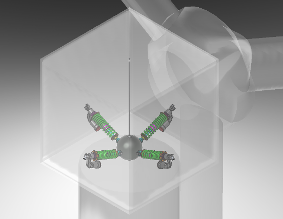

Wind Turbine Vibration Absorption
Background
The following project was designed using methods of engineering design analysis of vibration using spring-mass system in two degrees of freedom (2DOF). The purpose was to minimize in-plane and out-of-plane vibration for wind turbine experiencing high wind speeds at wind farms.
Execution
The design was accomplished using several techniques ranging from MATLAB programming simulation to determine the stiffness and mass of the springs and the absorber mass, respectively. Several iterations were performed to achieve this desirable range and the final product was modelled in 3D using SolidWorks.
Results
